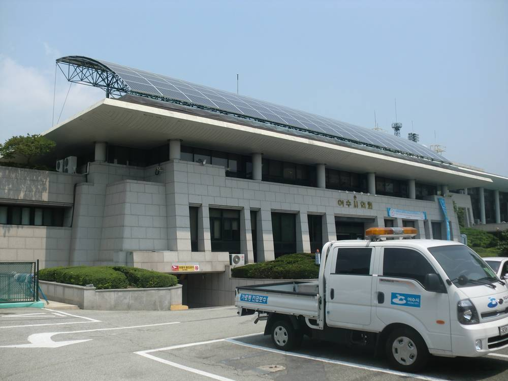

여수 최동익 의원 "햇빛소득마을 육성기금 2조 원 조성하자"…시의회 5분 발언서 제안

4년간 매년 5,000억 원, 주민 초기 자기자본·장기저리 융자에 쓰고 상환금은 다른 마을에 재대출
최동익 전남광주통합특별시의회 의원이 2일 제5회 제2차 정례회 5분 자유발언에서 '햇빛소득마을 육성기금' 조성을 제안했다. 규모는 총 2조 원으로, 매년 5,000억 원씩 4년에 걸쳐 마련하자는 내용이다. 재원은 정부가 행정통합에 따라 약속한 4년간 최대 20조 원 재정지원 가운데 활용할 수 있는 몫을 쓰자고 했다. 기금은 주민의 초기 자기자본을 마련하고 장기저리로 융자하는 데 쓰며, 갚은 원금과 이자는 다른 마을에 다시 빌려주는 구조다. 최 의원은 "지역의 자원이 주민의 자산이 되고, 그 수익이 다시 농어촌에 돌아가는 자립 모델을 구축할 수 있도록 통합특별시가 적극 나서야 한다"고 말했다. 이는 의원 개인의 제안이며 기금 조성이 정해진 것은 아니다.
시민에너지 관점
햇빛소득마을의 첫 문턱은 주민이 내야 하는 초기 자기자본이다. 제안대로 4년간 매년 5,000억 원을 장기저리로 빌려주고 갚은 돈을 다른 마을에 돌리면, 한 번 쓰고 끝나는 보조금과 달리 기금이 계속 순환한다. 대출이 마을 빚으로 남아 주민 부담이 된다는 걱정에는 상환 기간·금리·계통 접속 일정을 함께 공개해 답해야 한다. 발전소를 마을이 소유해야 수익이 지역에 남는 만큼, 의회와 집행부는 기금 규모와 재원 근거를 구체화해 논의에 올리기 바란다.
출처: 뉴스탑전남 2026-11-05 마재일 원문 보기
麗水のチェ・ドンイク議員「太陽光所得村育成基金2兆ウォンを造成しよう」…市議会5分発言で提案
4年間毎年5,000億ウォン、住民の初期自己資本と長期低利融資に充て、返済金は別の村に再貸付
全南光州統合特別市議会のチェ・ドンイク議員（麗水）は2日、第5回第2次定例会の5分自由発言で、「太陽光所得村育成基金」の造成を提案した。規模は総額2兆ウォンで、毎年5,000億ウォンずつ4年かけて用意する内容だ。財源は、政府が行政統合に伴い約束した4年間で最大20兆ウォンの財政支援のうち、活用できる分を充てるよう求めた。基金は住民の初期自己資本の確保と長期低利融資に使い、返済された元金と利子は別の村に再び貸し出す仕組みだ。チェ議員は「地域の資源が住民の資産となり、その収益が再び農漁村に還る自立モデルを築けるよう、統合特別市が積極的に動くべきだ」と述べた。これは議員個人の提案であり、基金の造成が決まったわけではない。
市民エネルギーの視点
太陽光所得村の最初の関門は、住民が出す初期自己資本である。提案どおり4年間毎年5,000億ウォンを長期低利で貸し、返済金を別の村に回せば、一度使って終わる補助金と違い基金が循環し続ける。融資が村の借金として残り住民の負担になるという心配には、返済期間・金利・系統接続の日程を併せて公開して答える必要がある。発電所を村が所有してこそ収益が地域に残る以上、議会と執行部は基金の規模と財源の根拠を具体化して議論に載せてほしい。
出典: ニューストップ全南（NewsTop Jeonnam） 2026-11-05 マ・ジェイル 原文を読む
丽水议员崔东益：应设立2万亿韩元"阳光收入村培育基金"…在市议会5分钟发言中提出
4年内每年5,000亿韩元，用于居民初期自有资金和长期低息贷款，偿还款再贷给其他村
全南光州统合特别市议会议员崔东益（丽水）2日在第5届第2次定期会的5分钟自由发言中，提议设立"阳光收入村培育基金"。基金总规模为2万亿韩元，计划4年内每年筹措5,000亿韩元。资金来源方面，他提出动用政府依行政统合承诺的4年最高20万亿韩元财政支援中可用的部分。基金用于筹集居民的初期自有资金和提供长期低息贷款，已偿还的本金和利息再贷给其他村。崔东益表示："统合特别市应积极行动，建立让地方资源变成居民资产、其收益再回到农渔村的自立模式。"这只是议员个人的提议，基金设立尚未确定。
市民能源视角
阳光收入村的第一道门槛是居民要出的初期自有资金。如果按提议4年内每年以长期低息贷出5,000亿韩元，并把偿还款转给其他村，那么与一次性用完的补贴不同，基金能够持续循环。对于贷款变成村里的债务、加重居民负担的担忧，需要同时公开偿还期限、利率和并网时间表来回应。电站由村庄所有，收益才会留在当地，因此议会和执行部门应把基金规模和资金来源依据具体化后提交讨论。
来源: NewsTop全南（News Top Jeonnam） 2026-11-05 马在日（音译） 查看原文
Yeosu lawmaker Choi Dong-ik proposes 2 trillion won "Sunlight Income Village Fund" in council floor speech
500 billion won a year for four years to cover residents' initial equity and long-term low-interest loans, with repayments relent to other villages
Choi Dong-ik, a member of the Jeonnam-Gwangju Integrated Special City Council from Yeosu, proposed creating a "Sunlight Income Village Fund" in a five-minute free speech at the fifth session's second regular meeting on the 2nd. The fund would total 2 trillion won, raised at 500 billion won a year over four years. He suggested drawing on the usable share of the up to 20 trillion won in fiscal support over four years that the central government promised in connection with administrative integration. The fund would cover residents' initial equity and provide long-term low-interest loans, with repaid principal and interest lent on to other villages. "The integrated special city must step up so that local resources become residents' assets and the returns go back to farming and fishing communities, building a self-reliant model," Choi said. This is one lawmaker's proposal; creation of the fund has not been decided.
Citizen Energy View
The first hurdle for a sunlight income village is the initial equity residents must put up. If 500 billion won a year is lent at low interest over four years, as proposed, and repayments are passed on to other villages, the fund keeps circulating, unlike a one-off subsidy. The worry that loans become village debt and a burden on residents should be answered by publishing repayment terms, interest rates and grid-connection schedules together. Because profits stay local only when the village owns the plant, the council and the executive should flesh out the fund's size and funding basis and put them up for debate.
Source: NewsTop Jeonnam 2026-11-05 Ma Jae-il Read the original